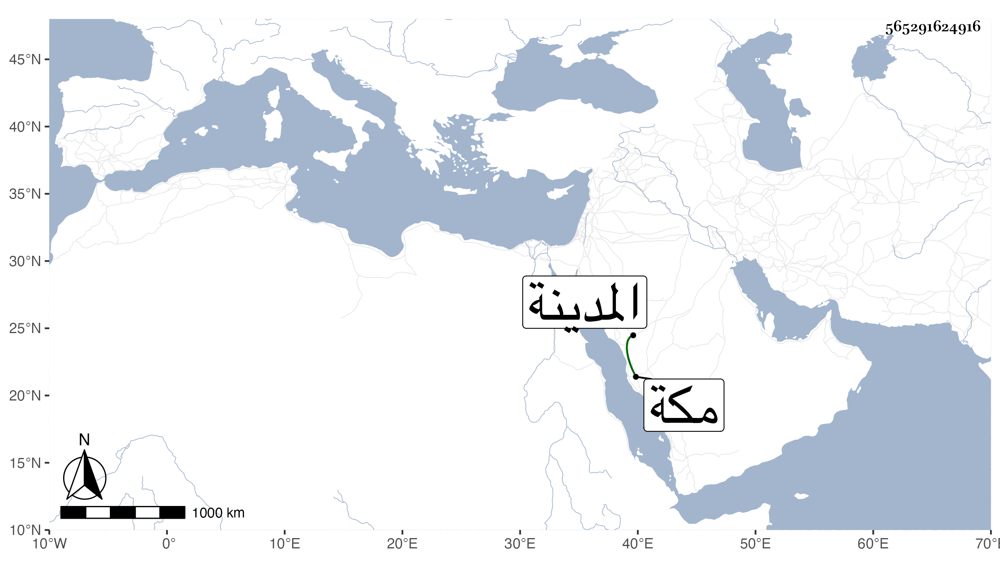

0902Sakhawi.DawLamic.ITO20230111-ara1.EIS1600.565291624916
Biography ID: 565291624916
680
فاطمة ابنة الشرفي يحيى بن عبد الله بن الملكي زوجة الشرفي الانصاري واخت إبراهيم ويوسف ووالدة البدر محمد بن الشهاب أحمد بن الفخر أبي الفرج تزوجها قريبها الشهاب بن أبي الفرج واستولدها المشار اليه ، ثم بعده بسنين الناصري بن الجمالي ثم الشرفي واستولدها خمسة أولاد أكبرهم يحيى وأخيرهم أحمد المدني لكونه ولد بالقرب من المدينة في سنة موتها فانها حجت مع الرجبية ودخلت مكة متوعكة بحيث طيف بها محمولة بين العتالين على سرير ويقال ان التوعك كان ملازمها طول الطريق حتى ماتت في ثامن شوال قبل قضاء فريضة الحج سنة احدى وسبعين عن سبع وثلاثين سنة وبلغني عنها انها صرحت بكون زوجها بمكة ايضا فكان كذلك .
